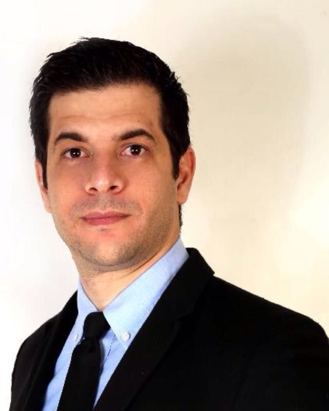
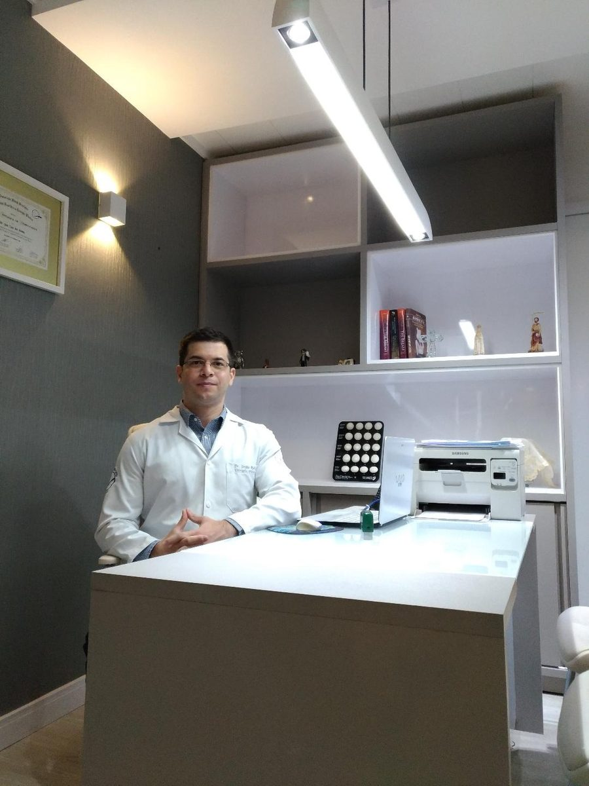

Início · O cirurgião
Sergio Rodrigo, cirurgião plástico.
Membro Especialista da Sociedade Brasileira de Cirurgia Plástica (CRM-BA 22252 · RQE 14690). Cada informação desta página tem a fonte ao lado.
Nas palavras dele
O cirurgião
“Nascido e crescido no estado da Bahia, o Dr. Sergio Rodrigo iniciou sua formação médica no estado do Tocantins, posteriormente trabalhou em inúmeros hospitais do estado de São Paulo e Rio de Janeiro. Fez sua residência médica em cirurgia plástica […] [no] Instituto Nacional do Câncer (INCA/RJ).”Texto “O cirurgião” do site do Dr. Sergio (versão arquivada, 2026)
“Médico cirurgião plástico com residência médica pelo Instituto Nacional do Câncer RJ (INCA) e membro especialista pela Sociedade Brasileira de Cirurgia Plástica.”Campo “Experiência” do perfil na Doctoralia
Formação
Do INCA ao Hospital da Bahia
- TOTocantinsFormação médica
Iniciou a formação médica no Tocantins, segundo o texto do site dele.
Site, 2026 - RJ2014–2017INCA · Rio de Janeiro
Médico residente em Cirurgia Plástica no Hospital do Câncer I do Instituto Nacional de Câncer.
CNES · SBCP - BA2017UFOB · Barreiras
Professor do Magistério Superior no Centro de Ciências Biológicas e da Saúde da UFOB.
Dados abertos UFOB - BADesde 2021Hospital da Bahia
Cirurgião plástico no Hospital da Bahia, vínculo atual no CNES.
CNES - 6010HojeSala 6010
Consultório no Centro Médico Hospital da Bahia, na Pituba.
Centro Médico HBA
No CNES, ele aparece como médico residente no Hospital do Câncer I do INCA de 03/2014 a 07/2017 e, depois, como cirurgião plástico em Barreiras (2017–2021) e no Hospital da Bahia, em Salvador, desde 08/2021.
Sociedade de especialidade
Sociedade Brasileira de Cirurgia Plástica

Na busca pública da SBCP, categoria “Associado (Membro Especialista)”, CRM 22252, com formação no Instituto Nacional do Câncer (RJ).
Ver o perfil na SBCPUniversidade e pesquisa
Ensino e publicação
- 2017Professor do Magistério Superior na UFOB, no Centro de Ciências Biológicas e da Saúde (lista oficial de servidores).
- 2018Orientação de trabalhos de conclusão de curso de Medicina sobre queimados (turmas da UFOB).
- 2024Primeiro autor de revisão sistemática na revista Cureus, com afiliação “Plastic Surgery, Hospital da Bahia” (PubMed Central).

Transparência
Como conferir
- Categoria de membro e formação: busca pública da SBCP.
- CRM e RQE: assinatura do Dr. Sergio no site dele e busca de médicos do CFM.
- Residência e vínculos hospitalares: consulta de profissionais do CNES.
- Docência: dados abertos da UFOB.
- Consultório: lista de cirurgiões plásticos do Centro Médico HBA.
Dúvidas frequentes
Perguntas comuns
O Dr. Sergio é membro da SBCP?
Sim. Na busca pública da SBCP, ele aparece na categoria “Associado (Membro Especialista)”.
Qual é o registro dele?
CRM-BA 22252 · RQE 14690.
Onde ele fez a residência?
Em Cirurgia Plástica, no INCA – Instituto Nacional de Câncer, no Rio de Janeiro, de 2014 a 2017, segundo o CNES.
Agende
A consulta acontece na sala 6010.
Atendimento com hora marcada no Centro Médico Hospital da Bahia, na Pituba. Combine dia e horário pelo WhatsApp (71) 99972-1674.